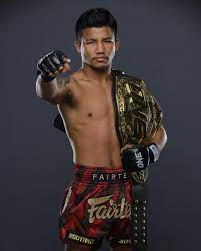

Rodtang Jitmuangnon
info
weitght limit: 61,2 KG
Height: 168 cm
Counrty:Thailand
Age:26 y
About Rodtang Jitmuangnon
Like many Thai warriors before him, ONE Flyweight Muay Thai World Champion Rodtang Jitmuangnon started training at a young age when he was just 7 years old. He was a timid child who avoided conflict and had little interest in training or competition when he first started, but this would all change when he had his first professional Muay Thai bout at the age of 10.
Encouraged by the fact that he could earn money through competing to support himself and his family, he took to the ring with renewed vigor. Rodtang initially trained at a small camp in his hometown of Pattalung, but soon began traveling to the famed Jitmuangnon Gym in Bangkok in pursuit of better training. He would make the move permanent in order to train full-time and pursue his dreams of becoming a World Champion.
Rodtang was highly successful, compiling over 250 wins by the time he turned 21, and he even won the prestigious Omnoi Stadium Title twice. But it is in Aug 2019 that Rodtang reached the pinnacle of striking, when he defeated Jonathan Haggerty to claim the ONE Flyweight Muay Thai World Title.